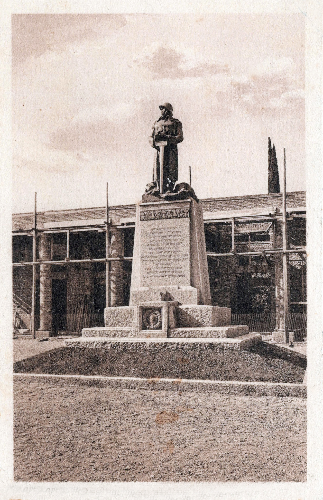

TAPPA 4: Piazza Duca d’Aosta, Monumento ai Caduti
4.1 - Monumento ai caduti

Il monumento ai Caduti in guerra oggi è diverso da quello originario.
La scultura fu smantellata, presumibilmente nel 1940, per “l’offerta del bronzo alla Patria” di nuovo in guerra, per essere fusa e recuperare il prezioso metallo. Con questa “offerta” furono distrutte in tutta Italia molte sculture in bronzo a memoria dei soldati caduti nella Prima guerra mondiale.
Il regime fascista non era nuovo a questi atti: il 18 dicembre 1935 aveva chiesto alle donne italiane di donare le fedi nuziali alla campagna “Oro alla Patria” durante la “Giornata della Fede”, per sostenere le spese di guerra per l’invasione dell’Etiopia e per il progetto imperiale coltivato dal Duce e poi miseramente fallito.
Nel secondo dopoguerra, nello stesso luogo dove era eretto il vecchio monumento, l’Amministrazione comunale decise di abbattere il piedistallo che ne rimaneva per erigere un nuovo manufatto.
Inaugurato nel 1958, il monumento rappresenta una sorta di monolito coperto da riquadri in pasta gessosa e nella parte anteriore presenta l’epigrafe in rilievo sormontata da un braciere in bronzo:
“SCANDIANO
A IMPERITURA MEMORIA
DEI SUOI FIGLI
CADUTI
IN TUTTE LE GUERRE”
La scelta, estetica e culturale, fu quella di non riprodurre armi o soldati armati.
La scultura fu smantellata, presumibilmente nel 1940, per “l’offerta del bronzo alla Patria” di nuovo in guerra, per essere fusa e recuperare il prezioso metallo. Con questa “offerta” furono distrutte in tutta Italia molte sculture in bronzo a memoria dei soldati caduti nella Prima guerra mondiale.
Il regime fascista non era nuovo a questi atti: il 18 dicembre 1935 aveva chiesto alle donne italiane di donare le fedi nuziali alla campagna “Oro alla Patria” durante la “Giornata della Fede”, per sostenere le spese di guerra per l’invasione dell’Etiopia e per il progetto imperiale coltivato dal Duce e poi miseramente fallito.
Nel secondo dopoguerra, nello stesso luogo dove era eretto il vecchio monumento, l’Amministrazione comunale decise di abbattere il piedistallo che ne rimaneva per erigere un nuovo manufatto.
Inaugurato nel 1958, il monumento rappresenta una sorta di monolito coperto da riquadri in pasta gessosa e nella parte anteriore presenta l’epigrafe in rilievo sormontata da un braciere in bronzo:
“SCANDIANO
A IMPERITURA MEMORIA
DEI SUOI FIGLI
CADUTI
IN TUTTE LE GUERRE”
La scelta, estetica e culturale, fu quella di non riprodurre armi o soldati armati.